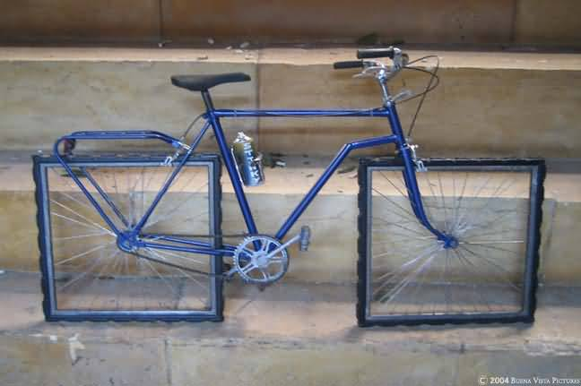

What is a design failure?

A design failure happens when an interface does not work for the people who use it. Sometimes it is an honest mistake: a button too small to tap, a layout that breaks on a phone, a system that leaves its users confused.
Sometimes it is not a mistake at all. The interface works exactly as intended, but the intention is to trick us into a choice we did not want to make, or to keep us scrolling for as long as possible. These failures are harder to see, because from the company's point of view they are a success.
This topic looks at both kinds: from famous failures of the past to the apps we use every day. The subtopics are meant to be read in order, but each one also stands on its own.
Subtopics
1. Historic failures
Famous mistakes from the history of technology, and what they taught designers.
2. Mobile UX
Tiny buttons, broken layouts, pop-ups and forms: when interfaces do not fit the phones we use.
3. Dark patterns
Interfaces designed on purpose to trick us into doing things we did not mean to do.
4. Ethical HCI
When an app works perfectly for the company and fails the user: attention, persuasion, harm and what can change.